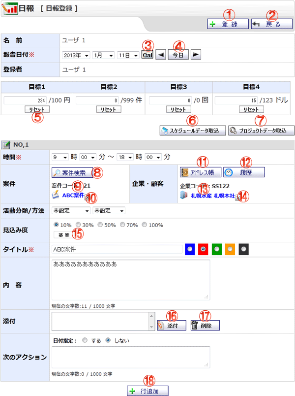

日報を登録する画面です。

機能説明
登録ボタン入力された内容で日報を登録し、完了画面へ遷移します。入力内容に不備がある場合エラーメッセージが表示されます。 |
戻るボタン遷移元の画面へ遷移します。 |
|---|---|
カレンダーボタンポップアップでカレンダー画面が開きます。 |
前日・今日・翌日移動ボタン現在表示している日付から、表示を切り替えます。
|
リセットボタン目標の実績値をリセットします。 |
プロジェクトデータ取込ボタン選択日に該当するプロジェクトのTODOがポップアップ表示されます。 |
スケジュールデータ取込ボタン選択日に登録されているスケジュールがポップアップ表示されます。 |
案件検索ボタンポップアップで案件検索画面を開きます。 |
案件リンク選択している案件のポップアップ画面を開きます。 |
案件削除ボタン選択している案件を削除します。 |
アドレス帳ボタン選択している案件のポップアップ画面を開きます。 |
履歴ボタン過去3ヶ月間の日報に登録されている企業・顧客をポップアップします。 |
企業・顧客リンク選択している企業・顧客情報のポップアップ画面を開きます。 |
企業・顧客削除ボタン選択している企業・顧客を削除します。 |
基準ボタン見込み度の基準を登録している場合、見込み度の基準がポップアップ表示されます。 |
添付ボタン添付ファイル選択画面を |
削除ボタン添付のリストで選択中の添付ファイルを削除します。 |
行追加ボタン日報登録用の行を追加します。 |
表示・入力項目説明
目標
選択したユーザの目標を表示します。
タイトル
日報のタイトル色を表示します。
タイトル色
日報のタイトル色を選択します。
時間
日報の時間を選択します。
内容
日報の内容を表示します。
日報日付
検索する日報の報告日付を範囲指定で指定します。
案件
検索する日報の案件を指定します。
企業・顧客
検索する日報の企業・顧客を指定します。
活動分類・方法
検索する日報の活動分類・方法を指定します。
見込み度
日報の見込み度を指定します。
添付
日報に登録された添付ファイルを表示します。